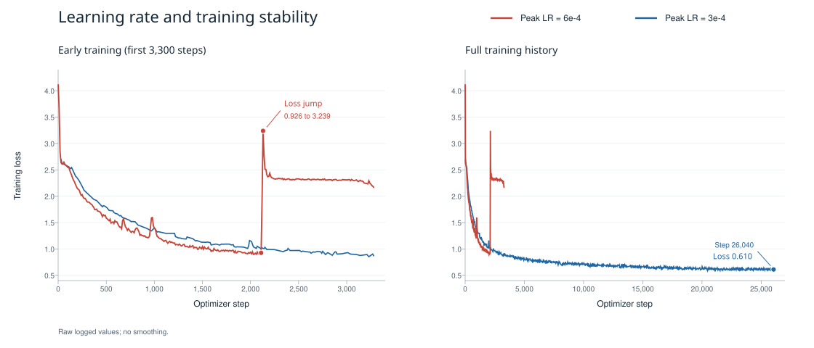

Qwen3.8-Flash-Next DSpark 架构探索
以 Qwen3.8-Flash-Next 为目标模型（Target），冻结其参数，训练三层 DSpark 草稿模型（draft）。各实验使用相同的数据和隐藏状态缓存，比较不同结构的收敛情况、候选选择和接受长度。
Baseline 架构
Baseline 采用标准 DSpark 结构。三层 draft 主干网络一次生成各预测位置的隐藏状态，LM head 将其映射为初始 logits。Markov head 根据前驱 token 添加偏置，confidence head 预测对应位置的分布重叠率。

图示以 D 为 anchor；实际 block size 为 7，预测 E–K。
DSpark 主干网络
设 block size 为 \(B\)，token embedding 为 \(E(\cdot)\)。对于前缀 [... A B C] 与新 anchor D，draft 输入为
MASK 槽共享输入 embedding，并使用不同的位置编号。anchor 槽对应 \(h_1\)，用于预测 E，后续槽依次预测 F – K。对 anchor 之前的每个位置 \(j\)，拼接 Target 第 45、46、47 层的隐藏状态，经投影与归一化得到上下文特征：
\(W_{\mathrm{aux}}\) 为可训练的无偏置投影。每个 query 可读取 anchor 之前的有效 Target 上下文及自身 block 的全部输入槽；anchor 本身通过 token embedding 输入。
每层的 query 来自当前 draft 隐藏状态，上下文特征与当前 block 隐藏状态分别经过该层的 K/V 投影，沿序列维拼接后在同一次 attention 中读取。三层共享 \(c_j\)，但各层的 Q/K/V 投影参数独立。Draft 状态通过 attention、残差连接和 MLP 逐层更新，最终经 RMSNorm 得到 \(h_1,\ldots,h_B\)，再由冻结的 LM head 并行生成全词表初始 logits \(\ell_1^0,\ldots,\ell_B^0\)。
Markov 顺序修正
令 \(t_0=D\)，\(t_i\) 为第 \(i\) 个生成位置的 token。Markov head 将前驱 token 映射为低秩表示 \(m_i\)，再投影为词表偏置 \(b_i\)：
\(W_1\) 与 \(W_2\) 均参与训练。前驱 token 提供偏置，上下文信息由 \(\ell_i^0\) 提供；greedy 选择 \(\hat t_i=\arg\max_v\ell_i(v)\)。
训练使用参考前驱 token，所有位置的 Markov 修正可并行计算。推理使用实际选出的前驱 token，依次查表、修正 logits 并选择下一个 token。主干网络的隐藏状态在整轮内保持不变。
Confidence head 与训练目标
Confidence 分支读取 draft 隐藏状态 \(h_i\) 与词表投影之前的 Markov 表示 \(m_i\)，通过线性层与 sigmoid 得到预测值：
输入维度为 2816，监督目标为 teacher 与修正后 draft 分布的重叠率 \(a_i\)。标签停止梯度，以二元交叉熵训练 confidence head；token 仍由 logits 选择。
基础损失中，CE 监督记录的下一个 token，L1 拟合 teacher 全词表分布，confidence loss 拟合分布重叠率。三项损失均在有效 response 位置按实验设置中的衰减权重求平均。
Engram 增强 Markov head
Engram-Markov 在前驱 token 的低秩表示中加入 n-gram 特征，由当前 draft 隐藏状态控制其权重。主干网络与 MASK 输入保持不变。

门控与特征注入
\(e_{i-1}\in\mathbb R^{2560}\) 为截至前驱 token \(t_{i-1}\) 的 n-gram 查表特征。
Draft 隐藏状态提供 query，Engram 特征提供 key 和 value。记 \(N\) 为无可训练 affine 参数的 RMSNorm，Markov rank 为 \(r=256\)，则
各位置独立计算门值，增强后的 Markov 表示与 logits 为
Confidence head 同样读取增强后的 \(m_i\)。
三个无偏置投影均为 \(2560\rightarrow256\)，新增 1.97M 参数。\(W_V\) 零初始化，初始 Engram 残差为零。
训练与推理
训练读取参考前驱位置的 Engram 缓存，并行计算各位置的门控与修正；推理随实际生成前缀逐 token 查表。Engram 表另占存储空间，查表和特征传输增加推理耗时。
Engram 增强 MASK 输入
两种方案均读取 anchor 前一个位置的 Engram 特征，投影后填入六个 MASK 槽，anchor 保留 token embedding，后续使用 vanilla Markov head。设 anchor 位置为 \(a\)，共享特征为
\(P\) 为随机初始化的无偏置投影，RMSNorm 无可训练仿射参数。六个槽共享 \(z_a\)，保留各自的位置编号、RoPE 和块内双向 attention。
门控残差

每槽一个可训练标量 \(\theta_j\)，由所有样本共享，零初始化后输入与 baseline 相同。门值离开零后，投影 \(P\) 开始获得任务梯度。新增参数为 \(2560^2+6=6{,}553{,}606\)。
直接替换

省去标量门，从训练开始替换 MASK embedding。新增参数仅为 \(P\)，共 \(2560^2=6{,}553{,}600\)。
训练与推理
训练按 anchor 读取 \(a-1\) 位置的缓存，缺少有效前驱或 block 无效时特征置零，新增参数由基础损失优化。推理每轮查表并投影一次，特征整轮保持不变；查表可在新 anchor 产生前进行，尝试与 Target 计算并行。
Draft Memory
Draft Memory 保留上一轮 draft 对后续位置的隐藏表示，供下一轮预测使用。训练分两次执行同一个 draft 模型，复用已有 Target 隐藏状态缓存。

两阶段训练
第一阶段不输入 memory，也不保留梯度，计算 draft 最终 RMSNorm 后的隐藏表示。LM head 与 Markov head 使用参考前驱 token 选择分数最高的 token，再找到预测与记录序列首次不匹配的位置。首次不匹配之前的前驱与 greedy 生成一致，因此可以用这次并行计算确定新的 anchor。
图中前两个预测匹配、第三个不匹配时，以参考 token F 为新 anchor，上下文扩展至 E。移除 \(h_1,h_2,h_3\)，保留后缀 \(h_4,h_5\)；这些状态来自原 block 前向，选出错误 token 后不重新计算。
第二阶段输入新 anchor、对应的 Target 上下文和保留的 memory，使用参考前驱 token 计算基础训练损失。梯度由这一阶段回传，更新共享 draft 和 memory 适配器。
Memory 筛选与读取
令旧 anchor 的绝对位置为 \(a\)，block size 为 \(B\)，第 \(i\) 个输出 hidden 为 \(h_i^{\mathrm{old}}\)，其中 \(i=1,\ldots,B\)。该 hidden 的旧 query 位置为 \(a+i-1\)，预测的 token 位置为 \(a+i\)。若连续匹配了 \(m<B\) 个 token，则
新 anchor 为 \(a'\)。后缀索引集合 \(\mathcal I\) 中的隐藏表示经共享的无偏置线性投影和带可训练尺度参数的 RMSNorm 转换为 memory：
\(P\in\mathbb R^{2560\times2560}\) 随机初始化，\(\gamma\) 为可训练归一化尺度；共新增 6,556,160 个参数，由第二阶段损失优化。
Memory 的 RoPE 位置采用预测位置 \(a+i\)，即旧 query 位置编号加一。因此，首条保留状态对齐新 anchor 后的第一个预测位置 \(a'+1\)。图中 \(h_4,h_5\) 分别对齐 G、H。
Adapter 计算一次，得到的同一组 \(M\) 供三层 draft 使用。每层的 query 来自当前 draft 隐藏状态。将正确上下文、memory 和当前 draft 隐藏状态拼接，再通过该层原有的投影得到 K/V。省略归一化与 RoPE 后，可写为
其中 \(H_{\mathrm{ctx}}\) 为投影后的正确前缀特征，\(X_\ell\) 为当前层的 draft 隐藏状态。
若整块全部匹配，则转移至记录序列的 bonus 位置，memory 为空。缺少后续监督或跨越回答边界的样本跳过。其余样本保留全部有效后缀。
训练与推理
每步训练增加一次无梯度 draft 前向、后缀筛选、memory 投影与 K/V 计算。
在线推理为每个请求保存上一轮 draft 的最终隐藏表示。Target 验证后，移除已接受位置和首次拒绝位置的状态，将剩余后缀按预测位置用于下一轮。各层通过自身投影生成 memory K/V。
训练用参考序列确定拒绝位置，memory 来自未输入 memory 的第一阶段。在线推理由 Target 验证确定拒绝位置，并连续复用上一轮的隐藏状态，因此可能累积更早轮次的 memory 信息。
Prefix reranker
Prefix reranker 用块内因果 Transformer 编码 anchor 与已选 token，结合当前 draft 隐藏状态，对 Markov top-16 候选进行残差打分，使候选选择利用整个块内前缀。

候选与前缀表示
沿用 baseline 记号，训练使用参考 token，推理使用当前轮已选 token。
复用 Markov head 的两张秩为 256 的 token 表 \(E_{\mathrm{in}}\) 与 \(E_{\mathrm{out}}\)，得到原 DSpark 分数
候选集合由 Markov 修正后的分数确定。因此，teacher argmax 的候选覆盖率构成重排选择准确率的上界。
Prefix Transformer 的输入为 \([t_0,\ldots,t_{i-1}]\)。各 token 经共享的 \(E_{\mathrm{in}}\) 查表、线性投影并加上可学习的块内位置 embedding。一个 pre-norm 因果 Transformer 层生成前缀表示 \(r_i\)。其宽度为 256，包含 4 个 attention heads，FFN 为 \(256\rightarrow1024\rightarrow256\)，使用 SiLU，输出经过 LayerNorm。
前缀编码范围限于当前 block，历史上下文由 \(h_i\) 提供。
残差打分
将 \(h_i\) 投影到 256 维，与 \(r_i\) 拼接，再经过 MLP 和输出投影形成查询向量 \(u_i\)。候选 token 则从共享的 \(E_{\mathrm{out}}\) 查表并投影为 \(k_v\)：
最终选择为 \(\hat t_i=\arg\max_{v\in C_i}s_i(v)\)。Prefix Transformer 编码前缀一次，候选通过查询向量与投影特征的内积并行评分。
\(W_o\) 零初始化，并列分数优先保留原 DSpark 的选择，因此初始 greedy 选择与原模型一致。
重排评估
train/tau_probabilistic 和 eval/tau_probabilistic 使用重排后的分布：对 top-16 候选的修正分数做 softmax，候选之外的概率置零。Teacher 使用原始全词表分布。重排前的 DSpark 分布也在全词表上归一化。
| 指标 | 含义 |
|---|---|
rerank_tau_gain |
同一 checkpoint、同一批 anchor 上，重排后与重排前的 \(\tau_{\mathrm{prob}}\) 之差 |
rerank_target_agreement_gain |
重排前后选中 teacher argmax 的比例之差；0.02 表示增加 2 个百分点 |
reranker/candidate_recall |
Teacher argmax 落在 Markov top-16 内的比例 |
rerank_teacher_forced_prefix_gain |
与参考 token 序列连续匹配的前缀长度变化，仍在 teacher-forced 输入下计算 |
rerank_tau_gain 包含分数修正、top-16 截断和重新归一化的影响；整体效果另与相同训练步数的独立 baseline 比较。
训练目标与更新范围
训练沿用现有隐藏状态缓存。每个 block 的前驱输入右移一位，以 anchor 开头，其后为参考序列中的 token。Prefix Transformer 使用因果掩码，一次前向计算编码所有位置。
记 \(p_i\) 为缓存参考前缀对应的 teacher 分布，重排监督标签为
记 \(\mathcal H\) 为有效且 \(v_i^\star\in C_i\) 的位置集合，在这些位置计算候选内的排序 CE：
其中 \(w_i=\exp(-(i-1)/4)\)，求和覆盖 batch 中各 block 的有效命中位置。没有命中位置时，该项为零。联合训练保留重排前的原始 DSpark 目标：
\(L_{\mathrm{base}}\) 为 baseline 的三项损失，监督全部有效位置；排序损失仅监督候选命中位置。联合训练共同更新主干网络和共享 Markov 参数。
冻结基线实验从训练 2,604 步的 baseline 开始，固定主干网络、Markov 和 confidence head，只训练 reranker 的新增参数，并重新初始化优化器与学习率调度。曲线横轴为此前训练步数加上本次新增步数，学习率按本次新增步数调度。
推理开销
主干网络每轮只运行一次。第 \(i\) 个位置利用上一个已选 token 更新 Prefix Transformer 的本地 K/V，得到 \(r_i\)，并计算 Markov 修正后的 top-16 候选及其残差分数。选出的 token 进入下一位置，整块候选最后交给 Target 验证。
Prefix K/V 在当前 block 内增长，每轮重新清空。
Evaluation
1.Experimental Setup
| 项目 | 设置 |
|---|---|
| Target | Qwen3.8-Flash-Next；Target backbone、token embedding 与 LM head 冻结 |
| 训练数据 | PerfectBlend，经 Target 重新生成回复 |
| 离线 cache | 通过 SGLang 提取并缓存 Target 的 aux hidden states 与 target_last_hidden_states；后者经冻结的 LM head 得到 teacher 分布 |
| 验证集 | GSM8K 256 条问题对应的重新生成回复及 hidden cache |
| 最大序列长度 | 4096 tokens，包含 prompt 与 response |
| Draft 架构 | 3 层；隐藏维度 2560；FFN 中间维度 9728；GQA：24 个 Q heads、2 个 KV heads，head dim 256 |
| Attention 设置 | 三层均为 full attention，无滑动窗口；Q/K RMSNorm 与 RoPE，RoPE theta 为 \(10^6\) |
| Aux 层 | [45, 46, 47]，按配置中的零基层号记录 |
| Block size | 7；Baseline 输入为 [anchor, MASK × 6] |
| Anchor 采样 | 每个样本最多 512 个 |
| 监督 | Response-only |
| Markov head | Vanilla，rank 256 |
| Batch size | 4 GPUs × micro-batch 4 × 梯度累积 32；global batch 512 |
| 学习率 | 峰值 \(3\times10^{-4}\)；warmup 比例 0.04 |
| 训练计划 | 完整 scheduler 为 26,040 optimizer steps；约 2,604 步 / epoch |
| Baseline loss | \(0.1L_{\mathrm{CE}}+0.9L_{\mathrm{L1}}+L_{\mathrm{conf}}\)；位置权重 \(\exp(-i/4)\)，\(i=0,\ldots,6\) |
| 精度与随机种子 | BF16；seed 42 |
| Checkpoint | 每 651 步保存一次 |
短程实验沿用完整学习率调度。
Dataset
训练使用 Open PerfectBlend Regenerated with Qwen3.8-Flash-Next：prompt 来自 mlabonne/open-perfectblend，response 由 Qwen/Qwen3.8-Flash-Next 在 non-thinking 模式下重新生成。采样参数为 temperature 0.7、top-p 0.8、top-k 20、min-p 0，单次最多生成 4096 tokens。
数据共 1,349,859 条对话记录、1,790,298 次 assistant 回复；其中 204,494 条为多轮记录，占 15.15%。使用 Target tokenizer 统计截断前的长度：prompt 累计所有非 assistant 消息正文，response 累计所有 assistant 回复正文，总长度按 non-thinking 对话模板编码，包含特殊 token，不追加新回复提示。
截断前，完整对话（含 chat template）共 1,782,301,322 tokens，约 1.782B；prompt 正文共 182,134,895 tokens，response 正文共 1,575,153,460 tokens（约 1.575B）。
- Prompt：平均 134.9 tokens，中位数 72，P95 为 495，P99 为 973。
- Response：平均 1,166.9 tokens，中位数 554，P95 为 4,242，P99 为 7,975。
- 总长度：平均 1,320.4 tokens，中位数 681，P95 为 4,621，P99 为 8,226。
训练的 4096 tokens 上限包含 prompt 和 response；截断前总长度超过该上限的记录有 111,429 条，占 8.25%。多轮记录累计全部回复，因此 response 长度可以超过单次生成上限。
Evaluation Metrics
离线指标
给定相同的参考前缀，记 Target 的概率分布（teacher 分布）为 \(p_i\)，draft 的概率分布为 \(q_i\)。两者的分布重叠率为
每个有效 block 的概率接受长度定义为
不足 7 个有效位置时，将无效位置的 \(a_i\) 置零，再对有效 block 求平均。各位置的 accept_rate@i 按有效 token 数求平均，各 token 等权。离线计算使用参考 token 作为前驱（teacher forcing）。
在线指标
接受统计使用各次评测的服务端计数增量。记 draft 轮数为 \(R\)，前 \(i\) 个候选连续被接受的轮数为 \(C_i\)，则
逐位置接受率 \(A_i\) 表示一轮中前 \(i\) 个候选均被接受的比例，结果表记为 pos-1 至 pos-7。MAL 包含每轮一个 bonus 或纠正 token。整体输出吞吐为总输出 tokens 除以评测总耗时。重复评测的准确率以均值 ± 样本标准差表示。
服务器非独占，吞吐和耗时测量不稳定，不用于速度比较，仅作记录。
每轮固定 7 个候选，整体 Draft 接受率为 \( (\mathrm{MAL}-1)/7 \)。验证使用标准 rejection sampler。
实验分组
| 实验 | 初始化与更新范围 | 比较的问题 |
|---|---|---|
| Baseline | 从头训练原 DSpark | 原结构随训练步数增加的收敛情况 |
| Engram-Markov | 从头联合训练 draft 与 Engram 门控投影 | Markov head 的 n-gram 条件对接受长度的影响 |
| Engram-MASK：门控残差 | 从头联合训练 draft、输入投影与逐槽标量门 | 保留 MASK embedding 的门控注入效果 |
| Engram-MASK：直接替换 | 从头联合训练 draft 与输入投影 | 内容相关输入替代固定 MASK 的效果 |
| Draft Memory | 从头训练 draft 与 memory adapter，仅第二阶段回传 | 上一轮 draft 状态对新 anchor 下续写的作用 |
| Prefix reranker：联合训练 | 从头联合训练 draft 与 reranker | 加入前缀重排后，相对独立 baseline 的效果 |
| Prefix reranker：冻结基线 | 加载 baseline step 2604，仅训练新加的 reranker | 固定原模型后，重排模块能改善多少 |
Evaluation Results
1. Acceptance rate vs. Sampling
固定 Baseline step 7812（3 epochs），在 non-thinking 模式下评测 GSM8K test 全集 1,319 题，使用 5-shot。Setting 1 使用 greedy draft，Setting 2、3 分别比较 greedy 与 probabilistic draft，共五种组合。
Target 使用 TP4，最大并发为 256。每轮生成 7 个候选，关闭 adaptive verification。上下文上限为 8,192 tokens，原 non-thinking 评测输出上限为 1,024 tokens，Baseline Setting 2/3 为 4,096 tokens。
- Setting 1：temperature=0、top-p=1.0、top-k=0、min-p=0。Target 与 Draft 均为 greedy。
- Setting 2：temperature=0.7、top-p=0.8、top-k=20、min-p=0，与训练回复 regen 的采样参数相同。
- Setting 3：temperature=1.0、top-p=0.95、top-k=20、min-p=0。
整体结果
| Target 采样 | Draft 采样 | MAL | pos-1 | pos-2 | pos-3 | pos-4 | pos-5 | pos-6 | pos-7 | 吞吐（tokens/s） |
|---|---|---|---|---|---|---|---|---|---|---|
| Setting 1 | greedy | 4.9568 | 92.89% | 82.49% | 69.81% | 56.50% | 43.12% | 30.55% | 20.32% | 2,708.712 |
| Setting 2 | greedy | 4.9209 | 92.47% | 81.82% | 68.99% | 55.55% | 42.63% | 30.39% | 20.25% | 2,643.963 |
| Setting 2 | probabilistic | 4.8986 | 92.65% | 81.95% | 68.89% | 55.02% | 41.92% | 29.75% | 19.68% | 2,709.611 |
| Setting 3 | greedy | 4.7277 | 90.03% | 78.29% | 65.36% | 52.04% | 39.82% | 28.27% | 18.97% | 2,653.968 |
| Setting 3 | probabilistic | 4.7048 | 91.20% | 79.25% | 65.59% | 51.58% | 38.52% | 26.81% | 17.53% | 2,920.471 |
Setting 1 的准确率为 96.7%。Setting 2 下，greedy 与 probabilistic draft 分别为 96.8% ± 0.0%、97.0% ± 0.0%。Setting 3 下分别为 96.7% ± 0.4%、96.6% ± 0.2%。
Greedy draft 下，Setting 2 相比 Setting 1 的 MAL 降低 0.72%。Setting 2、3 切换为 probabilistic draft 后，MAL 分别降低约 0.45%、0.48%。
2. Acceptance rate vs. Epochs
比较 Baseline step 7812（3 epochs）与 step 26040（10 epochs）在 GSM8K test 全集 1,319 题上的结果，使用 5-shot、Setting 1、greedy draft 与 non-thinking。10 epoch 数据来自 2026 年 10 月 9 日的两次评测，汇总值为各次指标的算术平均。
| Epochs | MAL | pos-1 | pos-2 | pos-3 | pos-4 | pos-5 | pos-6 | pos-7 | 吞吐（tokens/s） |
|---|---|---|---|---|---|---|---|---|---|
| 3 | 4.9568 | 92.89% | 82.49% | 69.81% | 56.50% | 43.12% | 30.55% | 20.32% | 2,708.712 |
| 10 | 5.1290 | 93.29% | 83.60% | 71.72% | 59.13% | 46.67% | 34.46% | 24.05% | 2,888.485 |
从 3 epoch 到 10 epoch，MAL 提高约 3.47%，整体 Draft 接受率从 56.53% 升至 58.99%（提高 2.46 个百分点）。第 1 位接受率提高约 0.40 个百分点，第 5–7 位分别提高约 3.54、3.91、3.73 个百分点，提升主要体现在 block 后段。3 epoch 的准确率为 96.7%，10 epoch 两次日志均为 96.8%，invalid rate 均为 0%。
Prefix reranker 的效果
在 GSM8K 上固定 Target 采样、greedy draft 与 non-thinking，对比 Baseline 和联合训练的 Prefix reranker。两者均使用 step 7812 的导出模型。
| 方法 | Target 采样 | Draft 采样 | 思考 | MAL | pos-1 | pos-2 | pos-3 | pos-4 | pos-5 | pos-6 | pos-7 | 吞吐（tokens/s） |
|---|---|---|---|---|---|---|---|---|---|---|---|---|
| Baseline | Setting 1 | greedy | non-thinking | 4.9568 | 92.89% | 82.49% | 69.81% | 56.50% | 43.12% | 30.55% | 20.32% | 2,708.712 |
| Prefix reranker | Setting 1 | greedy | non-thinking | 5.0629 | 93.48% | 82.22% | 70.65% | 57.83% | 45.17% | 33.64% | 23.30% | 3,711.9851 |
| Baseline | Setting 2 | greedy | non-thinking | 4.9209 | 92.47% | 81.82% | 68.99% | 55.55% | 42.63% | 30.39% | 20.25% | 2,643.963 |
| Prefix reranker | Setting 2 | greedy | non-thinking | 4.9977 | 92.69% | 81.30% | 69.36% | 56.68% | 44.33% | 32.69% | 22.71% | 3,563.909 |
Reranker 在 Setting 1、2 下的准确率分别为 96.9%、96.5%。
Reranker 在 Setting 1、2 下的 MAL 分别提高 2.14%、1.56%。
Thinking 的影响
Prefix reranker 在 GSM8K 上使用 greedy draft，比较 thinking 模式下的 Setting 2、3。Thinking 使用模板默认设置，每题输出上限为 4,096 tokens，不发送自定义 stop。
| 方法 | Target 采样 | Draft 采样 | 思考 | MAL | pos-1 | pos-2 | pos-3 | pos-4 | pos-5 | pos-6 | pos-7 | 吞吐（tokens/s） |
|---|---|---|---|---|---|---|---|---|---|---|---|---|
| Prefix reranker | Setting 2 | greedy | thinking | 3.1763 | 66.21% | 46.26% | 34.98% | 26.63% | 19.78% | 14.15% | 9.64% | 2,857.751 |
| Prefix reranker | Setting 3 | greedy | thinking | 2.8463 | 59.63% | 39.70% | 29.25% | 21.76% | 15.84% | 11.07% | 7.38% | 2,565.931 |
Thinking 在 Setting 2、3 下的准确率分别为 97.6%、97.3%。
Thinking 的 Setting 3 相比 Setting 2，MAL 降低 10.39%。
MATH-500
2026 年 10 月 9 日，Baseline 在 non-thinking 模式下使用 Setting 1、2、3 评测全部 500 题。Setting 1 使用 greedy draft，Setting 2、3 使用 probabilistic draft。采用 0-shot 提示，由 Math-Verify 计分。输出上限为 4,096 tokens，最大并发为 256。
| 方法 | Target 采样 | Draft 采样 | 思考 | MAL | pos-1 | pos-2 | pos-3 | pos-4 | pos-5 | pos-6 | pos-7 | 吞吐（tokens/s） |
|---|---|---|---|---|---|---|---|---|---|---|---|---|
| Baseline | Setting 1 | greedy | non-thinking | 5.6069 | 92.35% | 82.67% | 73.38% | 64.73% | 56.71% | 49.06% | 41.81% | 4,638.802 |
| Baseline | Setting 2 | probabilistic | non-thinking | 5.4771 | 91.80% | 81.68% | 71.63% | 62.49% | 54.15% | 46.58% | 39.34% | 4,516.657 |
| Baseline | Setting 3 | probabilistic | non-thinking | 5.2532 | 90.66% | 79.45% | 68.61% | 58.87% | 50.15% | 42.41% | 35.15% | 4,108.819 |
Setting 1、2、3 的准确率分别为 96.0%、95.4% ± 0.3%、95.6%。
Setting 2 为两次评测的算术平均。Setting 1、2、3 的截断率分别为 3.6%、4.1%、3.4%。逐位置接受率由日志中的条件接受率换算，为近似值。
附录
学习率与训练稳定性

峰值学习率为 \(6\times10^{-4}\) 时，损失在 step 2110–2130 从约 0.926 突增至 3.239，到 step 3280 仍为 2.168，未恢复至突增前的水平。
降低峰值学习率至 \(3\times10^{-4}\) 后，训练保持稳定，损失整体下降，step 26040 时约为 0.610。后续实验采用这一学习率。